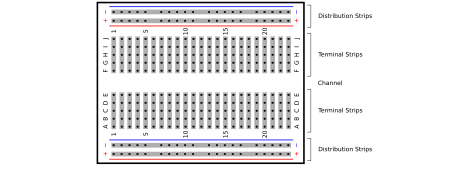
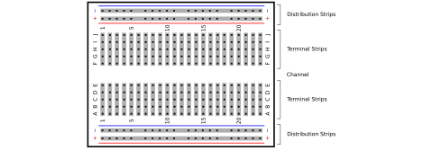

Next: A. Reading Electronics Schematics Up: PHYS328W Notes Previous: 4 Transistors
We considered simple transistor amplifiers in Sections 4.3 and 4.4. Amplifier circuits with nice properties — high gain and high input impedance, for example — packaged as integrated circuits (ICs), are called operational amplifiers or op amps. They are called “operational” amplifiers, because they can be used to perform arithmetic operations like addition, subtraction, and multiplication with signals. In fact, op amps can also be used to integrate and differentiate signals.
The schematic symbol for an op amp is shown in panel (a) of
Figure 15. A circuit model of an op amp is shown in
panel (b) of Figure 15. The output voltage of the op
amp is linearly proportional to the voltage difference between the
inverting and non-inverting input terminals  by a factor of
the gain . However, the output voltage is limited to the range
, where is the supply voltage. The
range
by a factor of
the gain . However, the output voltage is limited to the range
, where is the supply voltage. The
range
 is often called the linear
region of the amplifier, and when the output swings to or
, the op amp is said to be saturated. The output
voltages of the transistor amplifiers described in
Sections 4.3 and 4.4 are
similarly limited by the supply voltage.
is often called the linear
region of the amplifier, and when the output swings to or
, the op amp is said to be saturated. The output
voltages of the transistor amplifiers described in
Sections 4.3 and 4.4 are
similarly limited by the supply voltage.
An ideal op amp has infinite gain (), infinite input
resistance (
), and zero output resistance (). You should use these assumptions to analyze op amp circuits. A
consequence of the assumption of infinite gain is that, if the output
voltage is within the finite linear region, we must have . A real op amp has a gain in the range - , depending
on the type, and hence actually maintains a very small difference in
input terminal voltages when operating in its linear region. For most
applications, we can get away with assuming
. If the
positive or negative input of an op amp is connected directly to
ground, the other input will be held very close to ground and can be
considered grounded in circuit analysis. This is referred to as a
virtual ground.
, depending
on the type, and hence actually maintains a very small difference in
input terminal voltages when operating in its linear region. For most
applications, we can get away with assuming
. If the
positive or negative input of an op amp is connected directly to
ground, the other input will be held very close to ground and can be
considered grounded in circuit analysis. This is referred to as a
virtual ground.
We stock two operational amplifiers in the lab, the LM741, a general purpose bipolar junction transistor (BJT) based amplifier with a typical input resistance of 2 M, and the LF411, with field effect transistors (FETs) at the inputs giving a much larger input resistance ( ). Data sheets for these devices are available on the Texas Instruments web site (www.ti.com). Of the two, the LF411 comes closest to satisfying the assumptions associated with ideal op amp behavior. It costs more than the LM741 ($1.84 vs. $0.94 as of fall 2021).
In op amp based inverting amplifier is shown in Figure 16. The analysis of the behavior of the circuit is based on two very good approximations.
 flowing through the
input resistor is the same as that flowing through the
feedback resistor .
flowing through the
input resistor is the same as that flowing through the
feedback resistor .
The input resistor is connected directly to the virtual ground, so the input resistance of the circuit is . The output resistance is , where is the very small output resistance of the op amp.
The inverting amplifier has the advantage of low noise due to the lower input impedance, relative to a non-inverting amplifier. It also has a relatively fast slew rate, the maximum rate of change of the signal.
An op amp based non-inverting amplifier is shown in Figure 17.
The feedback loop of this amplifier is delivered by a voltage divider
in which is split by resistors and and delivered
to the negative input of the op amp, so that  and
are related by the voltage division expression
and
are related by the voltage division expression
The input is connected directly to the positive input of the op amp, so the input resistance of the circuit is that of the op amp. The output resistance is , where is the very small output resistance of the op amp.
The non-inverting amplifier has the advantages of the op amp itself, large input impedance and small output impedance. It has the disadvantage that it is susceptible to positive feedback to the non-inverting input from via which can lead to saturation.
The voltage follower or buffer, shown in Figure 18, is a special case of the non-inverting amplifier of Section 5.2 with and , giving a voltage gain of . This is useful for mirroring signals from low-power sources at the output of the op amp, which has very small output impedance and can deliver higher power.
An op amp based summing amplifier is shown in
Figure 19. The analysis of the circuit is very
similar to that of the inverting amplifier in
Section 5.1, with the additional complexity of
multiple inputs. The virtual ground at the op-amp inputs gives simple
expressions for the currents,
As we would expect based on the analysis of the inverting amplifier in Section 5.1, the input resistance “seen” by each input signal is that of the corresponding input resistor. The output resistance is , where is the very small output resistance of the op amp.
An op amp based differential amplifier is shown in Figure 20. The analysis of the circuit can be done using the junction rule for the virtual junction at the op-amp inputs
 resistors is important to getting the gain right. Moreover, if
and have a common DC component, mismatched resistors will
introduce a DC component to the output.
resistors is important to getting the gain right. Moreover, if
and have a common DC component, mismatched resistors will
introduce a DC component to the output.
An op amp based differentiator is shown in Figure 21. The optional feedback capacitor is often needed to damp oscillations in the output. The following analysis ignores .
This circuit has a virtual ground at the op-amp inputs. It follows that
and also that the charge on the capacitor is related to the input voltage by flowing through the resistor is to a good
approximation equal to that of the capacitor, which we can relate to
the charge on the capacitor via the definition of current
Combining Eqs. 52 - 54
yields
 and
and  are chosen to roughly match the
desired time scale  of the differentiation.
are chosen to roughly match the
desired time scale  of the differentiation.
An op amp based integrator circuit is shown in Figure 22. The optional feedback resistor is needed to drain the feedback capacitor in order to prevent the saturation of the op amp. The feedback resistor is ignored in the following analysis.
This circuit has a virtual ground at the op-amp inputs. It follows that the current flowing through the input resistor is related to the input voltage by
and the charge on the capacitor is related to the output voltage by Using the definition of current ( ),
Eq. 56 can be integrated to find the charge on the
capacitor.
Combining Eqs. 57 and 58 yields
),
Eq. 56 can be integrated to find the charge on the
capacitor.
Combining Eqs. 57 and 58 yields
and are chosen to give a time constant
shorter than the period of the slowest signal to be integrated.